开发600例与已处理训练3376例分开展示；最差10按全部已观察结果的E14最终Q排名。含Q>2触发停止的拒绝结果。没有重新求解、训练或读取封存测试。
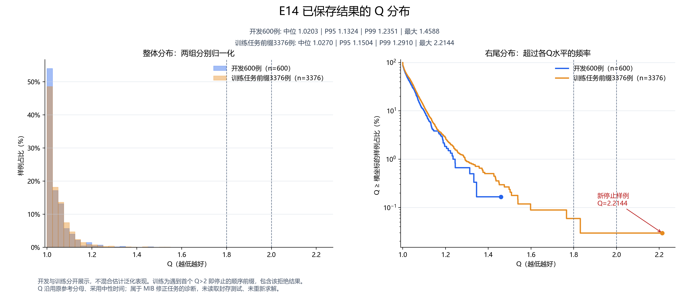
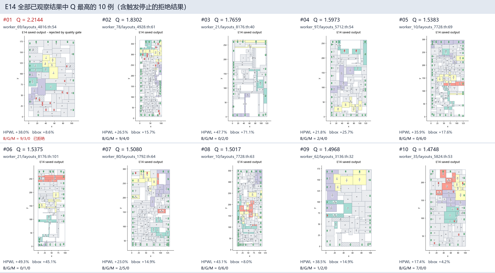
train:worker_69/layouts_4816.th:54 · 58 模块 · 质量门槛拒绝，未入库
HPWL gap +38.03% · bbox gap +8.61% · B/G/M 9/3/0
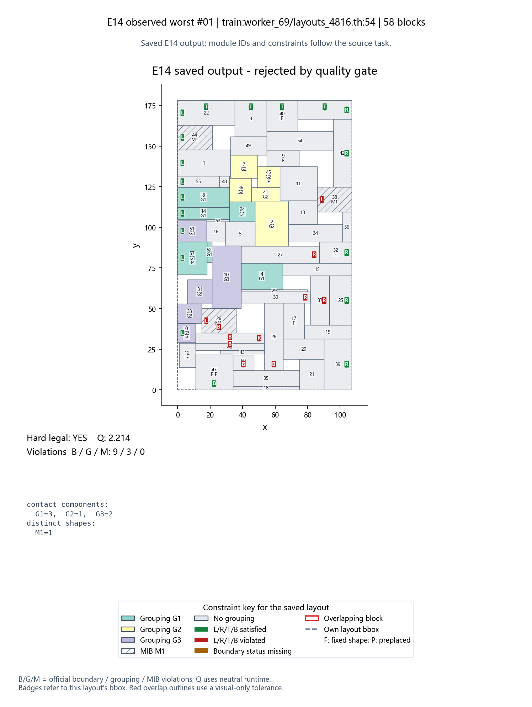
train:worker_78/layouts_4928.th:61 · 110 模块 · 已生成教师标签
HPWL gap +26.53% · bbox gap +15.74% · B/G/M 9/4/0
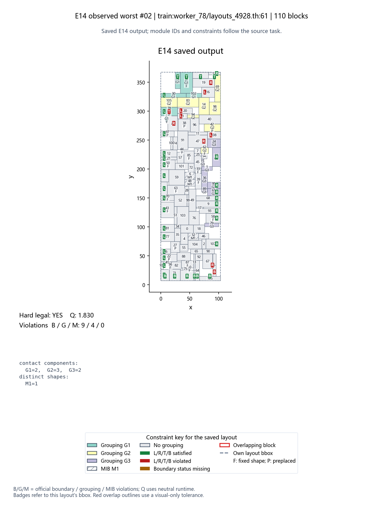
train:worker_21/layouts_8176.th:40 · 61 模块 · 已生成教师标签
HPWL gap +47.69% · bbox gap +71.06% · B/G/M 0/2/0
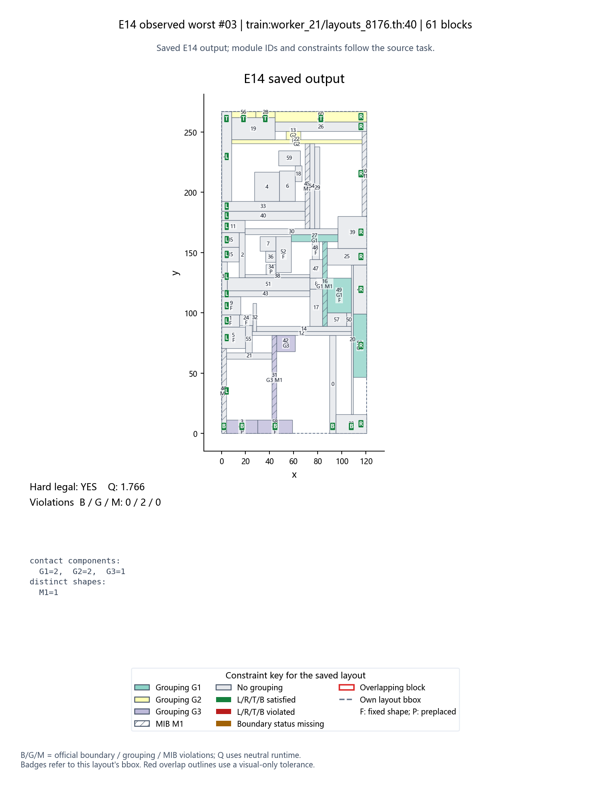
train:worker_97/layouts_5712.th:54 · 75 模块 · 已生成教师标签
HPWL gap +21.81% · bbox gap +25.67% · B/G/M 2/4/0
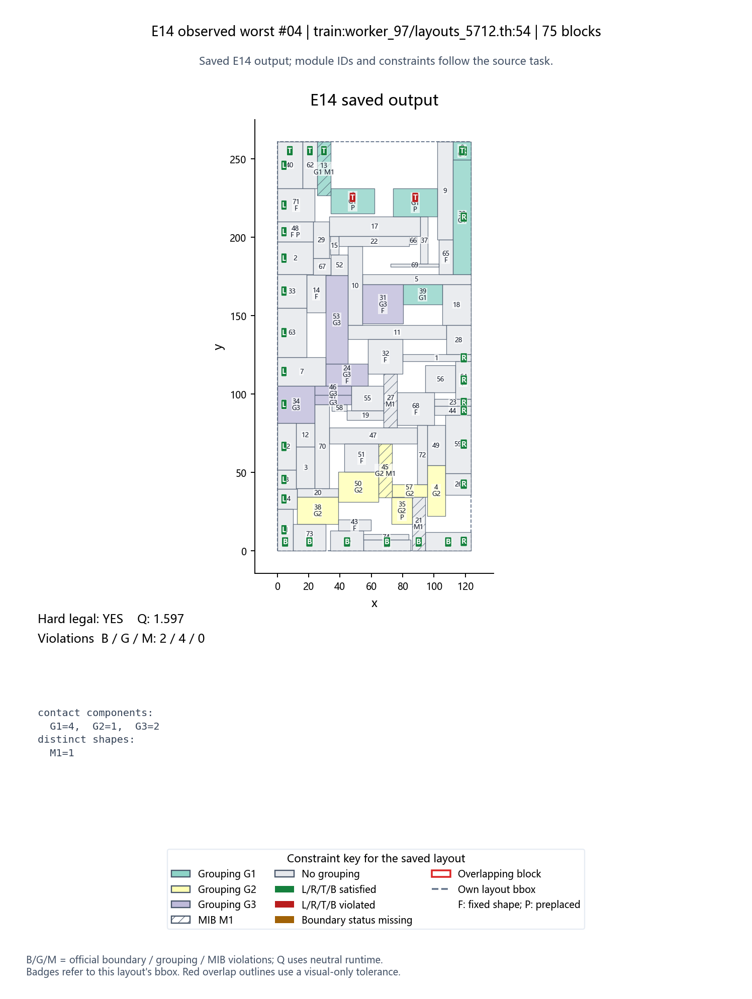
train:worker_10/layouts_7728.th:69 · 111 模块 · 已生成教师标签
HPWL gap +35.92% · bbox gap +17.60% · B/G/M 0/6/0
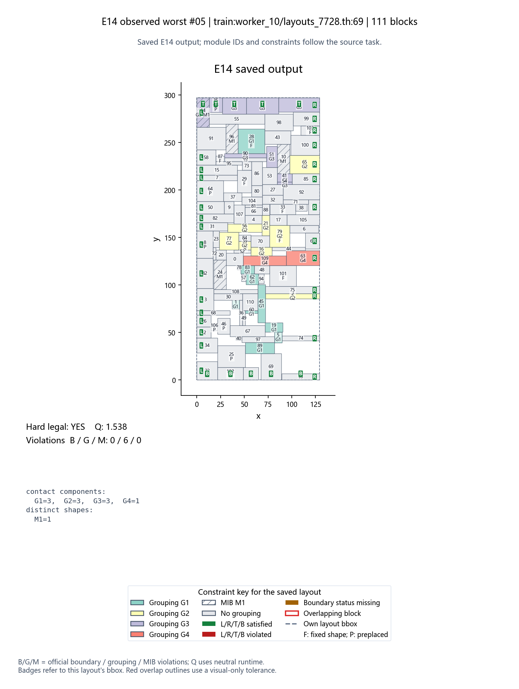
train:worker_21/layouts_8176.th:101 · 61 模块 · 已生成教师标签
HPWL gap +49.34% · bbox gap +45.07% · B/G/M 0/1/0
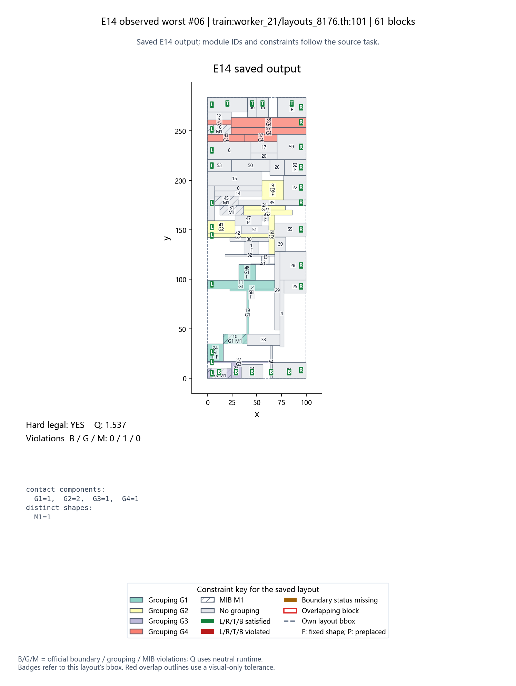
train:worker_80/layouts_1792.th:64 · 103 模块 · 已生成教师标签
HPWL gap +23.02% · bbox gap +14.87% · B/G/M 2/5/0
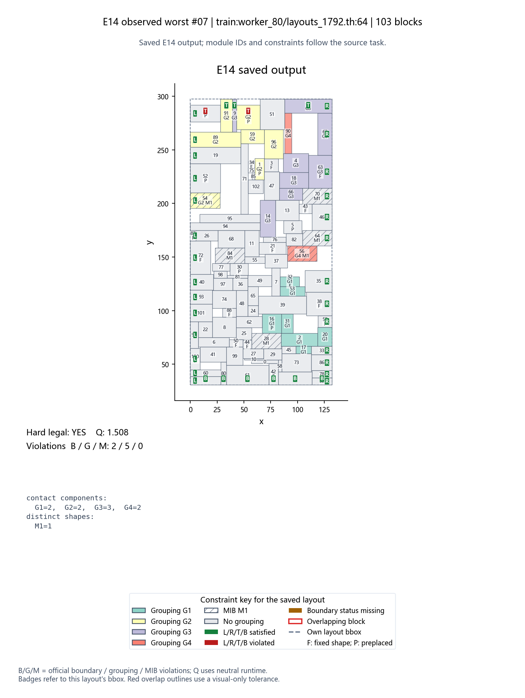
train:worker_10/layouts_7728.th:63 · 111 模块 · 已生成教师标签
HPWL gap +43.14% · bbox gap +7.95% · B/G/M 0/6/0
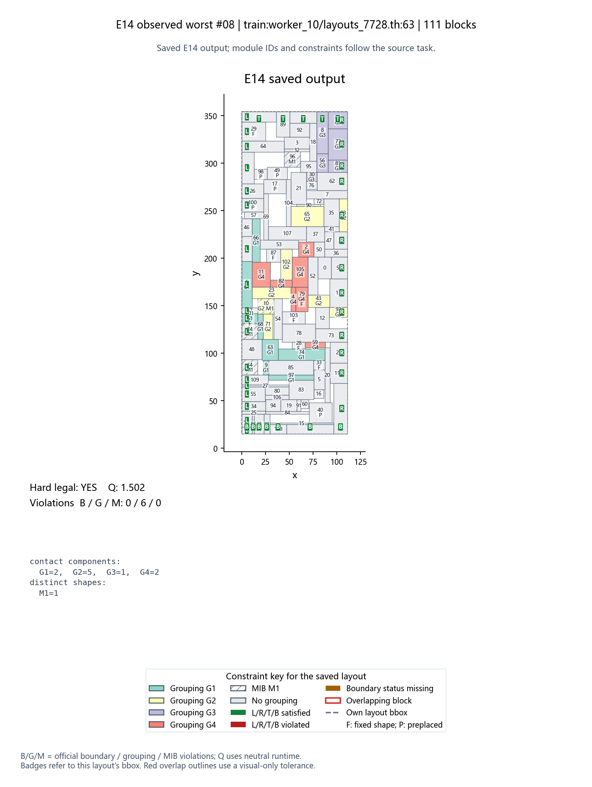
train:worker_62/layouts_3136.th:32 · 50 模块 · 已生成教师标签
HPWL gap +38.47% · bbox gap +14.93% · B/G/M 1/2/0
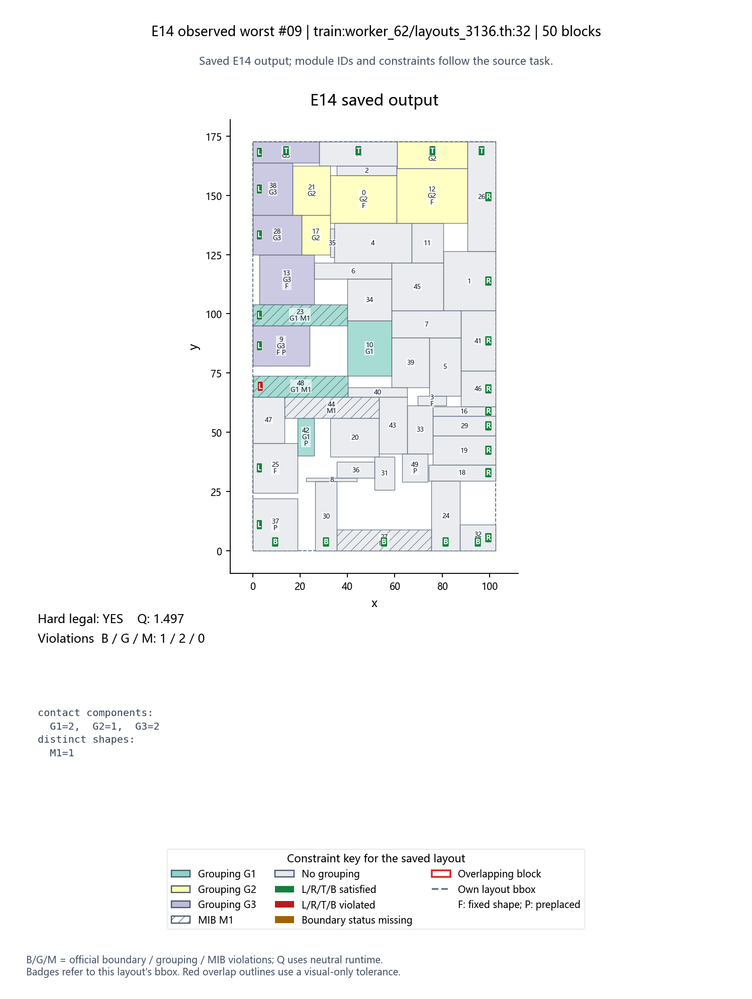
train:worker_35/layouts_5824.th:53 · 62 模块 · 已生成教师标签
HPWL gap +17.45% · bbox gap +4.21% · B/G/M 7/0/0
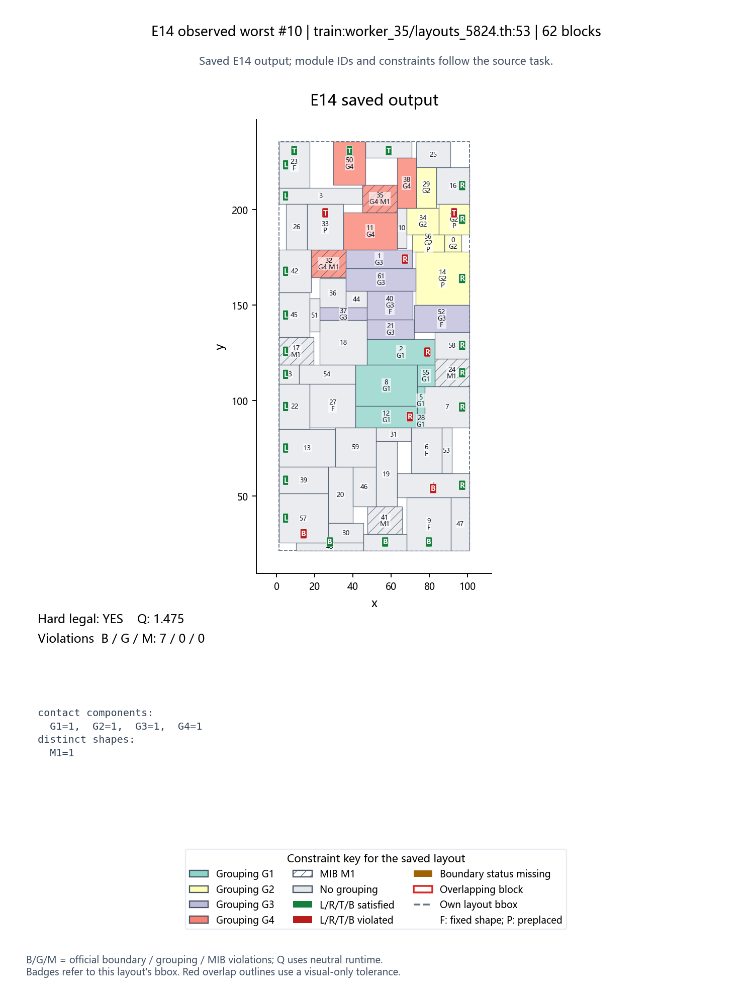